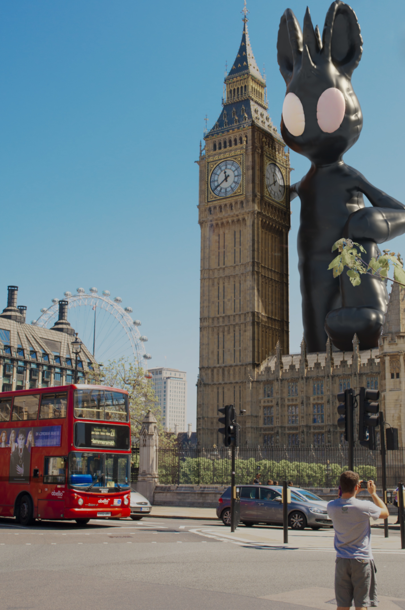
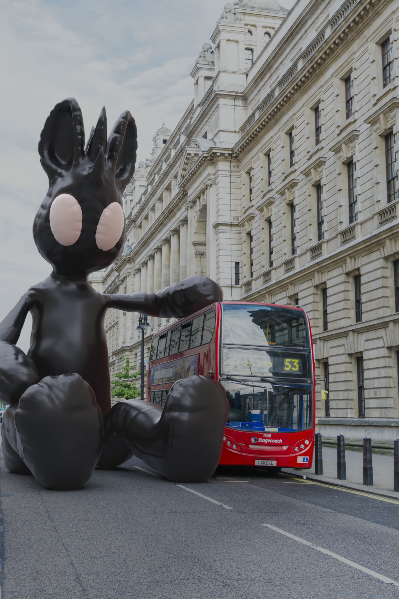
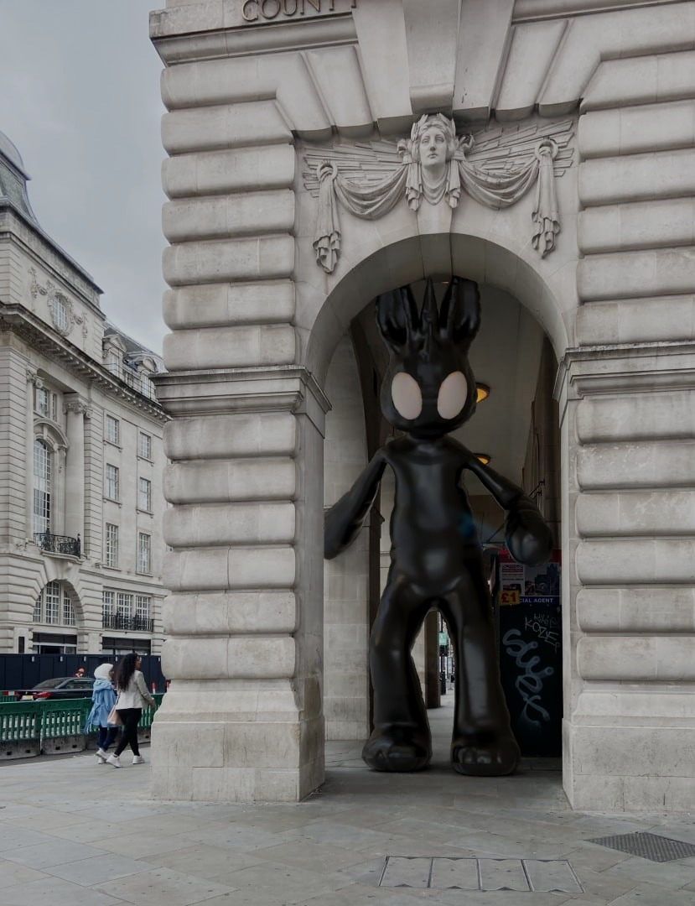
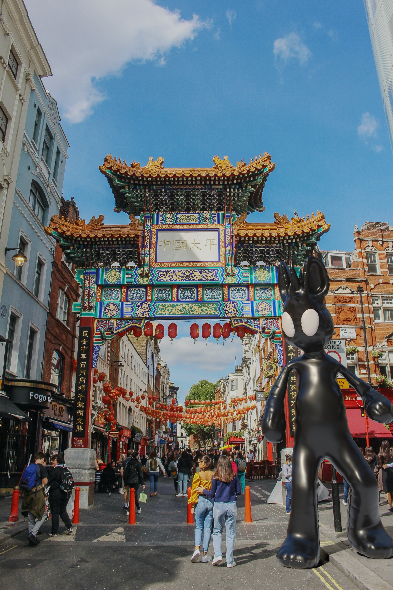
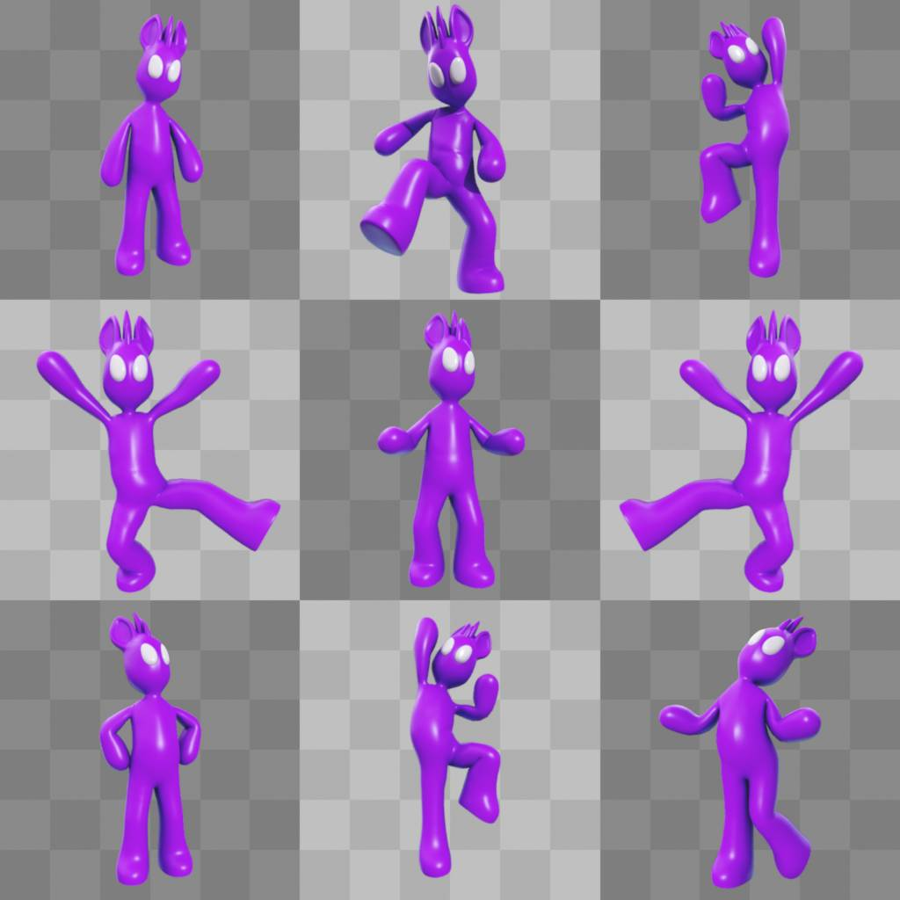

← Back to 3D Projects
← Zurück zu 3D-Projekten
Freelance Project · Fiverr
Freelance-Projekt · Fiverr
Balloon Character
Ballon-Charakter
A client project where I created a balloon-like 3D character and composited it into supplied London photos.
Ein Kundenauftrag, bei dem ich einen ballonartigen 3D-Charakter erstellt und in gelieferte London-Fotos eingefügt habe.
Blender
Client Work
Kundenauftrag
Compositing
Character Render
Charakter-Rendering
Client Brief
Kundenbriefing
Reference image supplied by the client
Referenzbild vom Klienten erhalten
Character should look like a large inflatable balloon figure
Charakter sollte wie eine große aufblasbare Ballonfigur wirken
Final character inserted into London photos
Finaler Charakter in London-Fotos eingefügt
My Work
Mein Beitrag
3D modeling of the character
3D-Modellierung des Charakters
Inflatable material look and simple poses
Aufblasbarer Material-Look und einfache Posen
Compositing into client photos
Compositing in Kundenfotos
Additional purple renderings for T-shirt prints
Zusätzliche violette Renderings für T-Shirt-Drucke
London Composites
London-Compositings




Character and T-Shirt Renderings
Charakter- und T-Shirt-Renderings
Client-preferred character render
Vom Klienten bevorzugtes Charakter-Rendering

Purple character poses for T-shirt prints
Violette Charakter-Posen für T-Shirt-Drucke